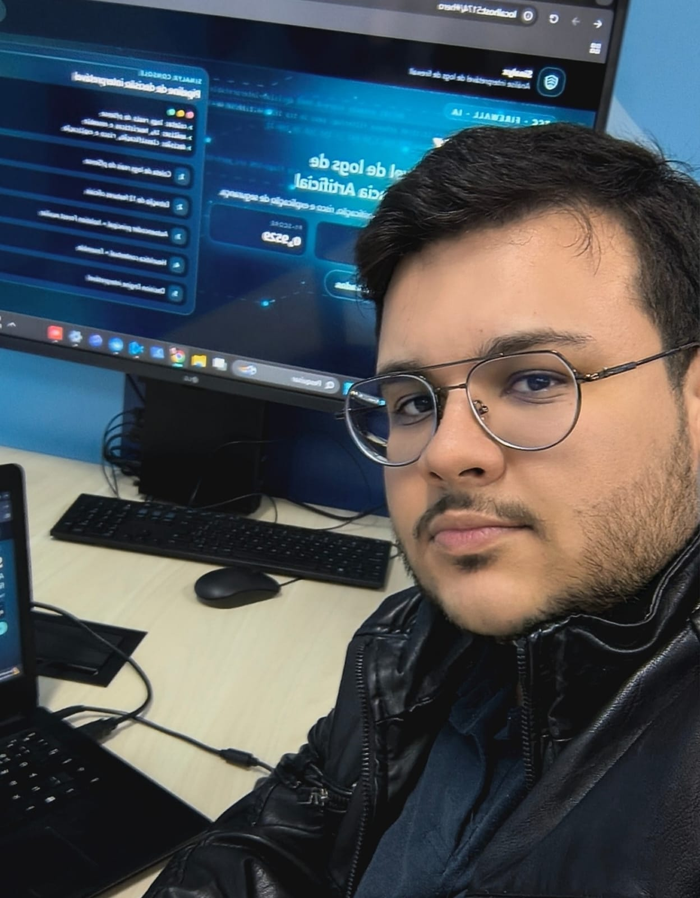
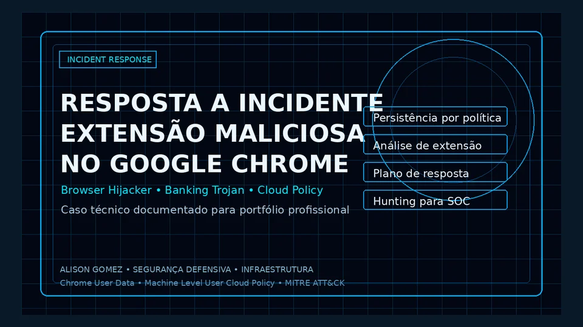
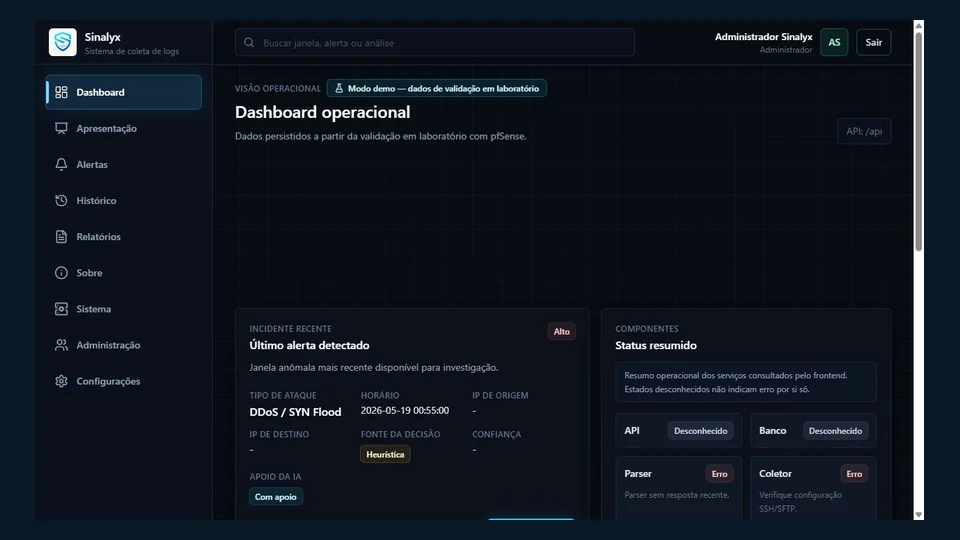

incluídas na rotina de auditoria de backups.
Disponível para novas oportunidades
Alison Gomez
Profissional de Infraestrutura, Redes e Segurança da Informação com automação aplicada.
Atuo com suporte N1/N2/N3, administração de redes e servidores, monitoramento, troubleshooting e resposta inicial a incidentes. Uso automação para reduzir trabalho manual, padronizar processos e gerar evidências técnicas confiáveis.
- Ambiente multiempresa
- Redes, servidores e monitoramento
- Diagnóstico com evidência

Resultados documentados
Resultados que geram impacto real
Números de operações e projetos que entregaram eficiência, segurança e confiabilidade.
redução na revisão de backups multiempresa.
no relatório sanitizado de investigação de incidente.
PDF, CSV e JSON para evidências, filtros e investigação.
Operação primeiro. Evidência sempre.Diagnóstico, automação segura, validação e documentação técnica.
Trabalho verificável
Cases em destaque
Problemas reais, soluções aplicadas e evidências técnicas.

Incidente: extensão maliciosa no Google Chrome
Investigação de persistência por política do navegador, coleta controlada de evidências, contenção e validação pós-correção.
Ver investigação
Auditor de Backups Dropbox
Auditoria incremental de arquivos e backups de VMs armazenados no Dropbox, aplicada a uma rotina multiempresa.
Ver estudo de caso
Sinalyx
Pipeline para transformar logs do pfSense em janelas analisáveis, persistir resultados e apoiar triagem em dashboard.
Ver estado técnicoTrajetória profissional
Experiência profissional
Atuação em ambientes críticos, com foco em disponibilidade, segurança, suporte e documentação.
Meu CPD
Técnico de Suporte
Suporte e monitoramento em ambiente multiempresa, com atuação em infraestrutura, firewalls, servidores, backups, e-mails, VMs, links e serviços críticos.
- Chamados N1/N2/N3, diagnóstico e acompanhamento.
- Zabbix, Grafana, Active Directory, Windows/Linux e Proxmox.
- Triagem de phishing, incidentes e automações operacionais.
Atuação autônoma / freelancer
Suporte técnico, redes e automação
Apoio em manutenção, configuração de equipamentos, redes, troubleshooting e melhoria de processos manuais.
- Scripts para Windows/Linux, inventário e diagnóstico de redes.
- Documentação de ambientes e padronização de procedimentos.
Prefeitura Municipal de Rio Claro
Estagiário de Suporte e Infraestrutura de TI
Suporte remoto e presencial, infraestrutura de rede, Active Directory, sistemas e estações de trabalho.
- Redes em oito departamentos com MikroTik, Intelbras, VPN, VLAN e DNS.
- Manutenção de computadores, Helpdesk e controle de acessos.
BRK Ambiental
Técnico de Suporte N1
Atendimento via Helpdesk, instalação e configuração de estações, impressoras, softwares corporativos e periféricos.
Capacidade aplicada
Competências principais
Áreas de atuação e tecnologias aplicadas em experiência profissional, projetos e estudos.
Segurança da Informação
- Resposta inicial a incidentes
- Análise de logs e correlação
- Segurança de endpoints
- Triagem de phishing
- Coleta e preservação de evidências
Redes e Infraestrutura
- TCP/IP, DNS, DHCP, VLAN e VPN
- pfSense, MikroTik e firewalls
- Windows Server e Linux
- Active Directory
- Proxmox, VMware e backups
Suporte e Operações
- Suporte N1/N2/N3
- Troubleshooting e escalonamento
- Atendimento remoto e presencial
- Inventário e documentação
- Zabbix, Grafana e monitoramento
Automação e Engenharia
- Python, PowerShell e Bash
- APIs REST e JSON
- SQL e organização de dados
- Arquitetura de integrações
- Testes, validação e documentação
FerramentaspfSenseMikroTikWindows ServerLinuxProxmoxZabbixGrafanaDockerPythonPowerShellGitrcloneSQL
Competência complementar
Arquitetura e projetos complementares
Estudos de arquitetura, protótipos e soluções para problemas reais, sem competir com os cases operacionais.

Estudo de arquitetura
VeoNyx
Requisitos e componentes para comunidades digitais, com autenticação, API, dados, cache, filas, armazenamento e moderação.
Ver decisões técnicas
Automação operacional
Organizador Zabbix
Auditoria e padronização de hosts, grupos, templates e dashboards para apoiar operação de monitoramento.
Ver automação
Toolkit defensivo
Pendrivão
Rotinas de inventário, suporte, auditoria e resposta inicial com dry-run, validação de escopo e quarentena.
Ver toolkitProcesso de trabalho
Como trabalho
Um método para entregar soluções seguras, revisáveis e eficientes.
- 01
Diagnóstico
Reproduzir o problema, mapear o ambiente e separar sintomas de causa raiz.
- 02
Planejamento
Definir ações, prioridades, riscos e impacto antes de executar mudanças.
- 03
Execução e validação
Implementar, testar e validar com segurança, controle e possibilidade de reversão.
- 04
Evidência
Registrar logs, relatórios, decisões e resultados para revisão e continuidade.
- Foco em segurança
- Automação com propósito
- Documentação clara
- Melhoria contínua
Formação
Base acadêmica e complementar
Formação voltada ao desenvolvimento, análise e gestão de soluções em tecnologia da informação.
Bacharelado em Sistemas de Informação
Fundação Hermínio Ometto (FHO) · 2023 - 2026
Cisco Networking Academy
Redes, cibersegurança, defesa de rede e suporte ao cliente de TI.
Contato
Vamos conversar?
Aberto a oportunidades em Suporte N2/N3, Infraestrutura, Redes, Segurança da Informação e Automação Operacional.
E-mailalmeidaalison@hotmail.com
LinkedInalison-gomez-3b339a23a
GitHubAlisonAGomez
LocalizaçãoRio Claro, SP · Brasil